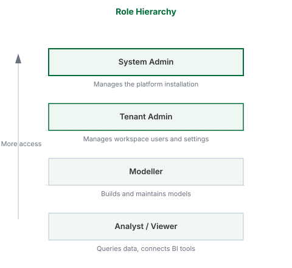

Roles and Permissions
What this covers
This article describes the four roles in Tessallite, what each role can do, and how roles are assigned and take effect.
The four roles
System Admin
The System Admin manages the Tessallite installation itself. There is one system admin per installation. This role is defined by environment variables set during deployment — it is not stored in the application database and cannot be created or removed through the interface.
The System Admin can:
- Create and list workspaces
- Create users within any workspace
- Access the System Administration screen
The System Admin cannot access workspace-level content, including projects, models, and data.
Tenant Admin
The Tenant Admin manages users and settings within a single workspace. Multiple users in the same workspace can hold the Tenant Admin role.
The Tenant Admin can:
- Invite and remove users
- Assign roles to users within the workspace
- Configure workspace settings
Modeller
The Modeller builds and maintains data models. This role is assigned per project within a workspace.
The Modeller can:
- Create and edit projects and models
- Add data source connections
- Define tables, joins, dimensions, and measures
- Configure aggregates and refresh schedules
- View diagnostics and model health
- Run queries and view results
Analyst / Viewer
The Analyst connects BI tools and queries data. This role is assigned per project.
The Analyst can:
- Connect via JDBC or XMLA
- Run queries
- View data returned by the model
The Analyst cannot:
- Edit models, dimensions, measures, or joins
- Add or remove data sources
- Manage users
How roles are assigned
The Tenant Admin assigns workspace-level roles (Tenant Admin) from the Admin panel. Project-level roles (Modeller, Viewer) are assigned from the project's Access settings.
Role changes take effect immediately. There is no caching or delay.
Role hierarchy
Roles are ordered from lowest to highest access:
Analyst → Modeller → Tenant Admin → System Admin
A user with a higher role holds all capabilities of the roles below it in the hierarchy.

Permissions reference
| Action | System Admin | Tenant Admin | Modeller | Analyst |
|---|---|---|---|---|
| Create workspaces | Yes | No | No | No |
| Manage workspace users | No | Yes | No | No |
| Create / edit models | No | No | Yes | No |
| Configure aggregates | No | No | Yes | No |
| Connect BI tools | No | No | Yes | Yes |
| Run queries | No | No | Yes | Yes |